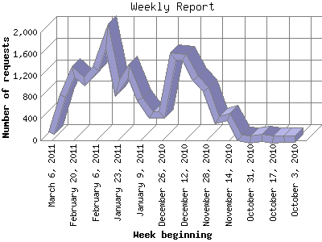

The Weekly Report identifies the activity for each week within the report
time frame. Remember that one page hit can result in several server requests
as the images for each page are loaded.
Note: Depending on the
report time frame for this report the first and last week may not represent
a full seven day week, resulting in lower hits.

| Week beginning | Number of requests | Number of page requests | |
|---|---|---|---|
| 1. | October 3, 2010 | 37 | 21 |
| 2. | October 10, 2010 | 32 | 16 |
| 3. | October 17, 2010 | 19 | 19 |
| 4. | October 24, 2010 | 50 | 50 |
| 5. | October 31, 2010 | 16 | 16 |
| 6. | November 7, 2010 | 39 | 39 |
| 7. | November 14, 2010 | 428 | 108 |
| 8. | November 21, 2010 | 380 | 103 |
| 9. | November 28, 2010 | 940 | 180 |
| 10. | December 5, 2010 | 1,148 | 160 |
| 11. | December 12, 2010 | 1,531 | 194 |
| 12. | December 19, 2010 | 1,545 | 142 |
| 13. | December 26, 2010 | 477 | 62 |
| 14. | January 2, 2011 | 472 | 55 |
| 15. | January 9, 2011 | 754 | 78 |
| 16. | January 16, 2011 | 1,280 | 131 |
| 17. | January 23, 2011 | 976 | 101 |
| 18. | January 30, 2011 | 1,931 | 200 |
| 19. | February 6, 2011 | 1,335 | 139 |
| 20. | February 13, 2011 | 1,088 | 118 |
| 21. | February 20, 2011 | 1,270 | 150 |
| 22. | February 27, 2011 | 821 | 92 |
| 23. | March 6, 2011 | 136 | 22 |
Most active week beginning January 30, 2011 : 200 pages sent. 1,931 requests handled.
Weekly average: 95 pages sent. 726 requests handled.
This report was generated on March 8, 2011 19:03.
Report time frame October 8, 2010 18:11 to March 8, 2011 18:15.
| Web statistics report produced by: analog 5.1 / Report Magic 2.21 |